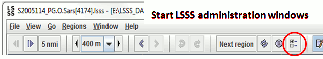
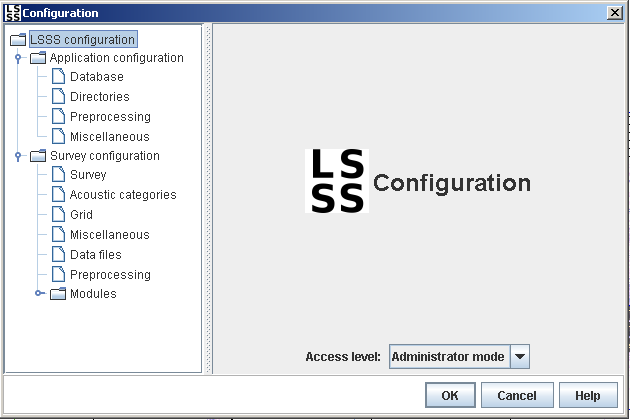
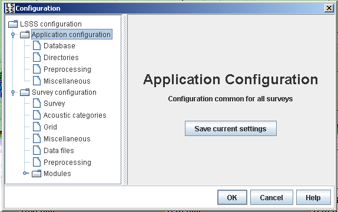
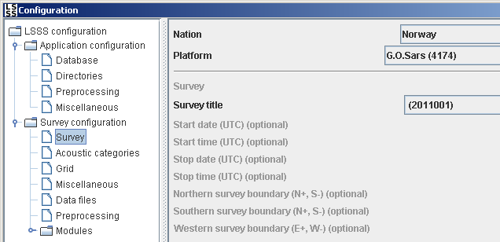
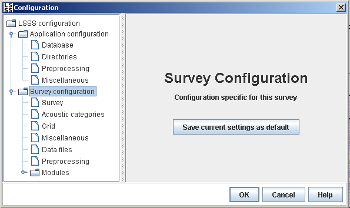

The first time LSSS is started, some global settings are configured. Those settings can be changed at any later time. The global settings are stored in files with a location decided by LSSS, and neither the location nor the file-names can be changed by the user if LSSS should be able to get its content. The global settings are used as default settings when a new survey is created. To change the global settings, you need to first start the LSSS administration window and then change to Administrator mode as shown below.


These are examples of the global settings that are used when a new survey is created:
Default database, database engine, data and work directories, preprocessing files and preprocessing directories (including the acoustic feature directories), and application miscellaneous settings may be changed from the "Database", "Directories", "Preprocessing" and "Miscellaneous" fields of the Application subsection of the main administration menu (in Access level "Administrator mode") as shown below. The button "Save current settings" has to be clicked for the LSSS to remember the adjusted application-settings.

The following global settings are stored in the LSSS-application-file:
Default nation or platform (ship) may be changed from the "Nation" and "Platform" fields of the Survey subsection of the main administration menu (in Access level "Administrator mode") as shown below.

When changes are done, they have to be saved to the survey-defaults file by pressing the button marked "Save current settings as defaults" as shown below.

Refer to the sections in the survey configuration chapter for explanation of other elements: